Presentación
Esta página existe para dar a conocer los distintos intereses que pueden presentar las personas acerca de Nicaragua.
"Si pequeña es la patria, uno grande la sueña".
Está ubicada casi en el centro de Centro América. Los países con los que Nicaragua limita son Honduras y Costa Rica, al Norte y al Sur, respectivamente, al oeste tenemos el océano Pacífico y al este con el mar Caribe.
El territorio de Nicaragua tiene una superficie aproximada de 130 374 km², constituyéndose con ello como el país más extenso de América Central.
En cuanto a límites marítimos, en el océano Pacífico colinda con El Salvador, Honduras y Costa Rica; mientras que en el mar Caribe colinda con Honduras, Colombia y Costa Rica.
Las principales poblaciones que se pueden encontrar en este país son Managua, León (una de las tres ciudades nombradas «León» en el mundo, las otras dos se ubican en España y en México, y llevan este nombre puesto que fueron parte de las colonias españolas de la época), Estelí, Granada, San Juan del Norte y San Juan del Sur. Estas dos últimas son importantes lugares turísticos para el país, ya que el río (también llamado San Juan) atraviesa casi todo el país, dando la oportunidad a los turistas de viajar a través de él y disfrutar de los paisajes que ofrece.

Foto de la Catedral de León - By Byralaal; - Own work, CC BY-SA 4.0, Link
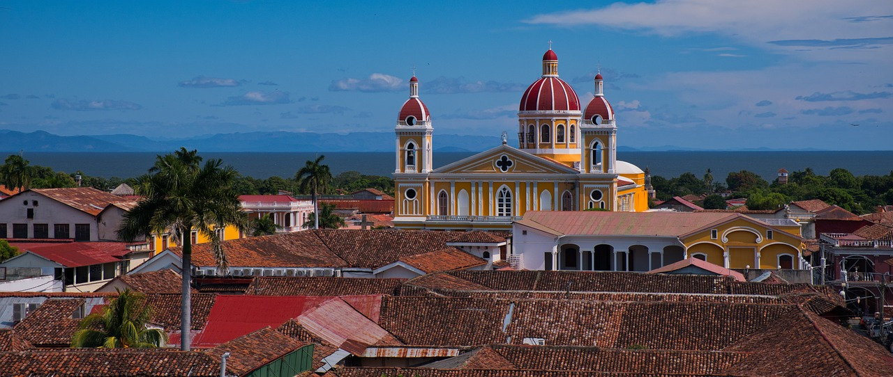
Catedral de Granada.
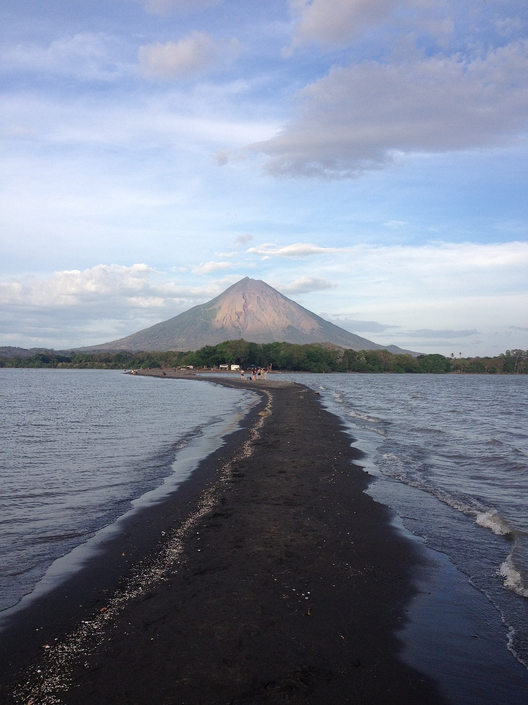
Isla de Ometepe.
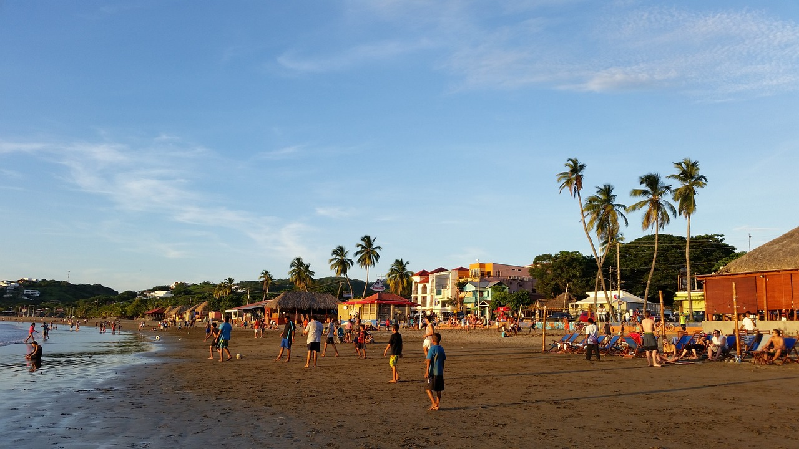
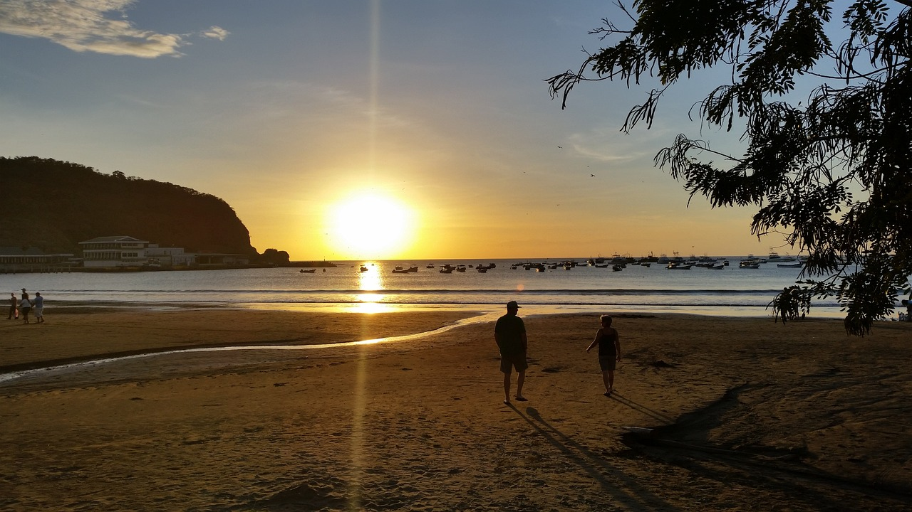
San Juan del Sur.
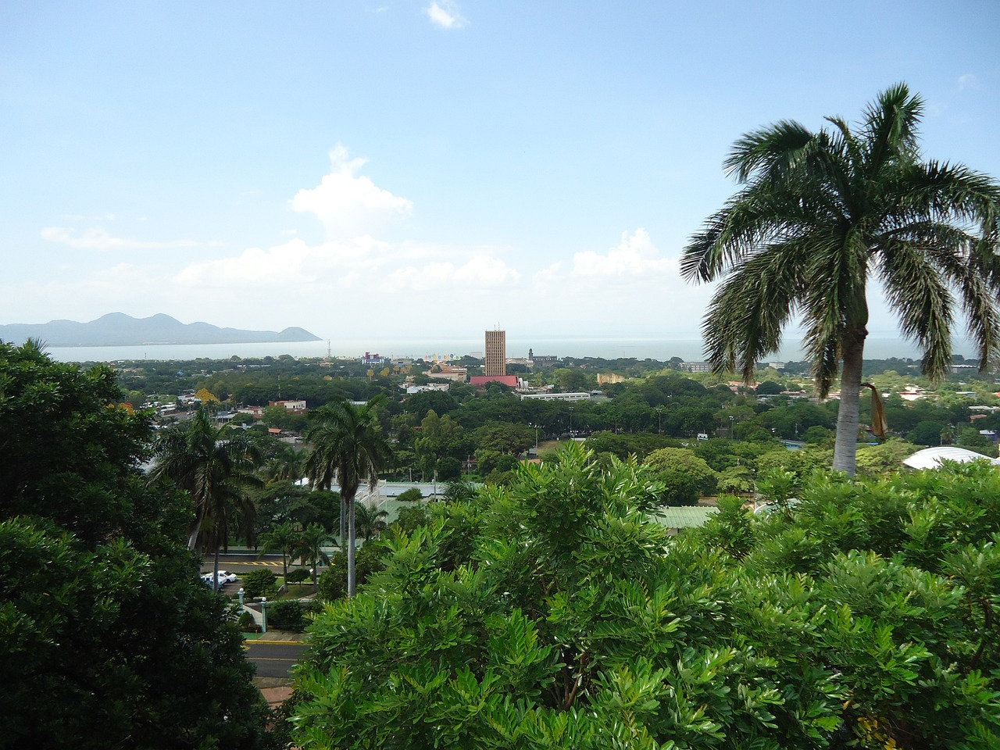
Managua
Nicaragua cuenta con una población de 6 624 554 habitantes (2020).
- Descubrimiento de Nicaragua (1502)
- Colonización de Nicaragua(1522)
- Independencia del Reino de España (1821)
- Unión y salida del Imperio mexicano (1821 - 1823)
- Provincias Unidas de Centroamérica (1823 - 1824)

De Huhsunqu - Este gráfico vectorial, sin especificar según el W3C, fue creado con Inkscape ., CC BY-SA 3.0, Enlace
- República Federal de Centroamérica (1824 - 1838)

De Huhsunqu - Este gráfico vectorial, sin especificar según el W3C, fue creado con Inkscape ., CC BY-SA 2.5, Enlace
- País independiente (1838)
- Guerra Nacional (Primera mitad del siglo XIX)
- Treinta y cinco años conservadores (1858 - 1893)
- Primeras décadas del siglo XX
- Revolución y Guerra Civil (1979)
Nicaragua es una república constituida por cuatro poderes: el Ejecutivo, el Legislativo, el Judicial y el Electoral. El poder ejecutivo es ejercido por el presidente, quien es elegido para un período de cinco años mediante sufragio universal. El poder legislativo está radicado en la Asamblea Nacional (unicameral) formada por 92 diputados electos por cinco años. Una Corte Suprema de Justicia integrada por 16 magistrados encargada de vigilar el sistema judicial. Las contiendas electorales son responsabilidad del Consejo Supremo Electoral. Administrativamente, Nicaragua está dividida en 153 municipios circunscritos, en quince departamentos y dos regiones autónomas.
Los partidos políticos principales son (orden alfabético):
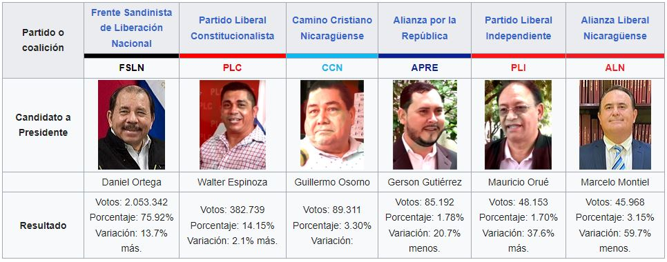
Candidatos arrestados o vetados:
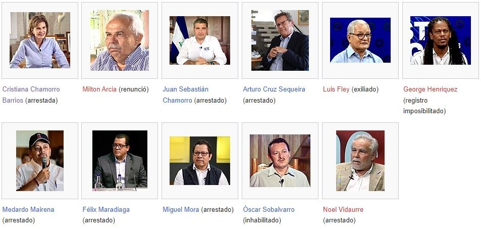
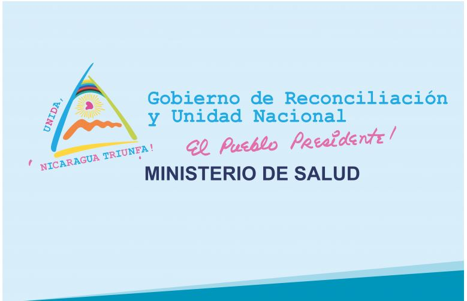
Misión, Visión y objetivo
Misión
Un sistema de salud que atiende a los nicaragüenses según sus necesidades y garantiza el acceso gratuito y universal a los servicios de salud, promueve en la población prácticas y estilos de vida saludables que contribuyen a mejorar la calidad y esperanza de vida y los esfuerzos nacionales para mejorar el desarrollo humano.
Visión
Garantía de salud como derecho constitucional y factor esencial para el desarrollo económico social de todas las familias nicaragüenses a través de un sistema de salud solidario, complementario y con la participación activa de la población que es la base del bienestar de todos.
Objetivo
Desarrollar un sistema de salud que haga efectivo el derecho ciudadano a la salud con equidad, con enfoque género y generacional para contribuir a reducir las iniquidades existentes, mejorar las condiciones de vida de la población nicaragüense y el desarrollo del país.
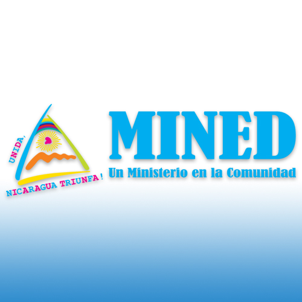
El Ministerio de Educación de Nicaragua es el ministerio rector en el sector educación conocido comúnmente como MINED.
La sede central se encuentra en la ciudad capital, Managua. Así mismo, existen sedes en las cabeceras departamentales de los 15 departamentos del país y, en el caso de las dos regiones autónomas Costa Caribe Norte y Costa Caribe Sur, se las conoce como sedes regionales.
Primaria y Secundaria
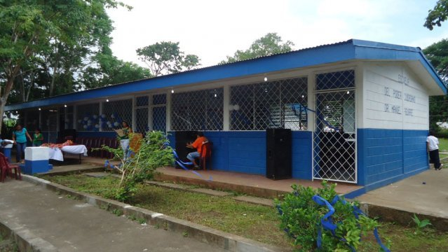
Universidad

De Josuecruz03 - Trabajo propio, CC BY-SA 4.0, Enlace
Marchas del 14 de Septiembre (Festividades y participación de la nación)
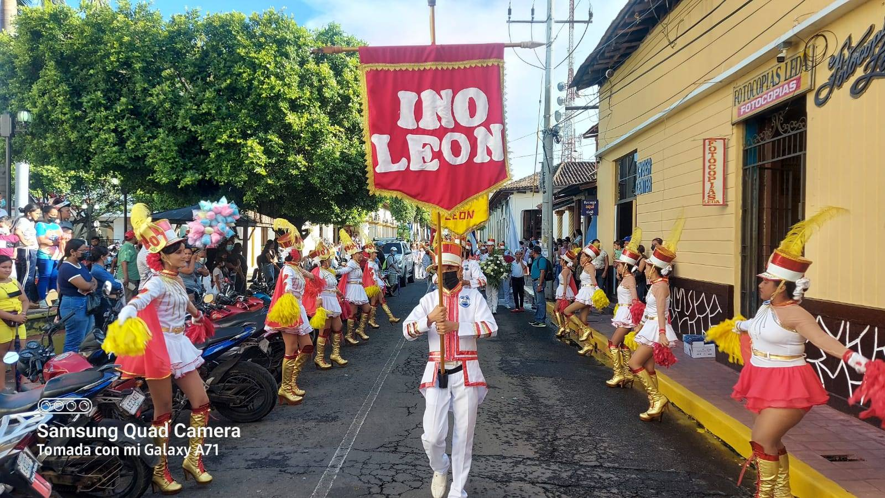
Moneda: El Córdoba (C$), llamado así en memoria del conquistador español Francisco Hernández de Córdoba. Su cambio oficial está sometido a un deslizamiento de 1% anual frente al dólar y desde la devaluación de finales de marzo de 2023 es de unos 36,35 córdobas por dólar.

De R Haussmann, Cesar Hidalgo - Observatorio de Complejidad Electrónico, Laboratorio de Difusión de MIT y el Centro para Desarrollo Internacional de la Universidad de Harvard. http://atlas.media.mit.edu, CC BY-SA 3.0, Enlace
Sectores económicos:
Sector Primario:
Agricultura: Contribuye aproximadamente al 15.5% del PIB. Incluye cultivos como café, banano, tabaco, azúcar y otros productos agrícolas.
Pesca: Aunque no es tan prominente como la agricultura, la pesca también es parte del sector primario.
Sector Secundario:
Industria: Representa alrededor del 24.4% del PIB. Las principales industrias incluyen el procesamiento de alimentos, productos químicos, maquinaria, productos metálicos, prendas de vestir, refinación y distribución de petróleo, calzado, fabricación de cables eléctricos y minería.
Construcción: También forma parte del sector secundario y contribuye al crecimiento económico.
Sector Terciario y Cuaternario:
Servicios: Este sector es el más grande, representando aproximadamente el 50.8% del PIB. Incluye actividades como turismo, banca y servicios módicos.
Comercio:
Exportaciones: Nicaragua exporta productos textiles, banano, café, carne, tabaco, azúcar y crustáceos. Los principales destinos de exportación son Estados Unidos, México, El Salvador, Honduras y Costa Rica.

Importaciones: Las importaciones incluyen combustibles, maquinaria, materiales de construcción, granos, fertilizantes, electricidad, productos minerales, productos químicos y materiales plásticos. Estados Unidos, México, Costa Rica, China y Honduras son los principales países de origen.
Indicadores Sociales:
Pobreza: Alrededor del 24.9% de la población vive bajo la línea de pobreza.
Desempleo: La tasa de desempleo es del 3.8% (2017), aunque el subempleo fue más alto en 2008.
Inflación: Se sitúa en el 4.2% (2020 est.).
Idioma: El idioma oficial es el español y es el único hablado en la cuenca del Pacífico. En la Costa Atlántica se habla también una variante del inglés, así como varios idiomas indígenas (misquito, sumo y rama).
También en Nicaragua, como en Argentina, Bolivia, Colombia, Costa Rica, Estado de Chiapas en México, El Salvador, Guatemala, Honduras, Paraguay, Uruguay, Venezuela se utiliza el voseo; y así como en la región rioplatense, el uso del pronombre "vos" es parte de la norma culta y el uso del tuteo es casi inexistente. Una de las características más sobresalientes del español nicaragüense es la aspiración de la /s/ posvocálica como en muchas regiones de España e Hispanoamérica.

De LaNicoya - Trabajo propio, CC BY 2.5, Enlace
Debido a la colonización británica de la Costa Atlántica, el criollo es común al lado de lenguas naturales como misquito, rama y sumo y otras autóctonas sumando una veintena sin catalogar. También, debido a la cercanía de Estados Unidos y su influencia en el estilo de vida nica, es muy común encontrar personas bilingües en las principales ciudades como Managua, León, Granada, San Juan del Sur y Estelí, aunque también como parte de la apertura de la industria recreativa en estos sitios.
Religión: La religión católica continúa siendo predominante (47,5% de la población) aunque también hay una presencia cada vez más importante de evangélicos (37,6%). Las demás religiones representan un 4%, destacando la Iglesia Morava en la Costa Caribe. Un 14% no profesa ninguna religión. El crecimiento de las iglesias protestantes evangélicas de influencia norteamericana en los últimos años en detrimento de la católica, aún predominante, es significativo.
La religión es una parte importante de la cultura de Nicaragua y se reconoce en la Constitución. La libertad religiosa, que ha sido garantizada desde 1939, y la tolerancia religiosa las promueve tanto el gobierno nicaragüense como la Constitución. Nicaragua no tiene religión oficial, prácticamente es un estado laico. Las declaraciones de la Iglesia católica sobre temas nacionales se siguen de cerca. Se recurre a su autoridad en ocasiones estatales importantes. También se recurre a su mediación entre partes contendientes en momentos de crisis política.
La principal y tradicional confesión cristiana del país durante siglos ha sido la católica. Sin embargo, el número de católicos practicantes ha disminuido paulatinamente desde los años sesenta, cuando el 96 % de la población se declaraba católico. Mientras que los miembros evangélicos protestantes y la población que se declara sin religión ha crecido rápidamente en número desde los años noventa.

La Gritería
La gritería es una fiesta religiosa popular nicaragüense en honor a la Inmaculada Concepción de María. Esta fiesta religiosa se celebra en todos los pueblos y ciudades de Nicaragua y en los lugares donde la colonia nicaragüense es importante como en Estados Unidos (particularmente en la ciudad de Miami), Costa Rica y El Salvador teniendo especial relevancia en El Viejo y León de donde es originaria.
Se celebra la noche del 7 de diciembre (aunque también el 14 de agosto), víspera de la fiesta católica de la Inmaculada Concepción de María. Devotos recorren las calles y visitan diferentes altares en honor a la Virgen María, en templos y casas particulares, realizando rezos, cánticos y quemando pólvora (cohetes y juegos pirotécnicos). A la vez que se grita «¿Quién causa tanta alegría?» y se responde «¡La Concepción de María!». Los habitantes de las casas reciben a los devotos con un «brindis» llamado popularmente «gorra».

De DayanaFerraris - Trabajo propio, CC BY-SA 4.0, Enlace